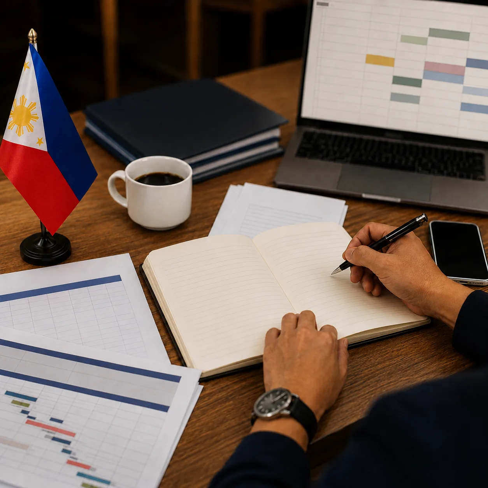

Founder-led community platform
Masinloc Connect
Local identity, connected to everyday possibility.
- The need
- Bring local information, cultural material, and practical digital tools into a shared community experience.
- Francine’s contribution
- Founder and independent builder across strategy, creative direction, research, editorial, and product experience.
- The work
- A platform spanning jobs and career preparation, marketplace discovery, a Sambal Tina dictionary, and reviewed community contributions.